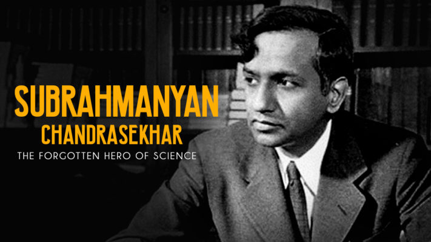

Subrahmanyan Chandrasekhar

Subrahmanyan Chandrasekhar was an astrophysicist. He discovered that massive stars can collapse under their own gravity to reach enormous or even infinite densities.
Chandrasekhar’s Scientific Career
- 1929-1939: the theory of white dwarfs
- 1938-1943: stellar dynamics, including the theory of Brownian motion
- 1943-1950: the theory of radiative transfer
- 1952-1961: hydrodynamic and hydromagnetic stability
- 1961-1968: the equilibrium and the stability of ellipsoidal figures of equilibrium
- 1962-1971: the general theory of relativity and relativistic astrophysics
- 1974- 1983: the mathematical theory of black holes
The Nobel Prize
- In the end, scientists came to accept that Chandrasekhar was correct, and Eddington was wrong. It was a slow process, taking about 30 years.
- It is now accepted that the ultimate fate of stars depends on their masses. Smaller stars become white dwarfs, while larger stars, after a supernova, can become neutron stars or black holes.
- In 1983, Chandrasekhar was awarded the Nobel Prize in physics “for his theoretical studies of the physical processes of importance to the structure and evolution of the stars.” He shared the prize with William Fowler.